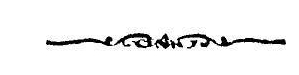

अथ
श्रीतन्त्रालोके
श्रीमन्महामाहेश्वराचार्याभिनवगुप्तविरचिते
श्रीजयरथकृत विवेकाव्यटीकोपेते

एकादशमाह्निकम् ।
स्वात्ममहाभीमरवा-
मर्शनवशशकलिताध्वसन्तानः ।
भवदुर्गभञ्जनजयो-
त्साहो जयताज्जयोत्साहः ॥
इदानीमपरार्धेन कलाध्वानमुपक्रमते
कलाध्वा वक्ष्यते श्रीम-
च्छांभवाज्ञानुसारतः ॥ १ ॥
ननु कलैव नाम किमुच्यते यस्या अप्य-
ध्वपरिभाषा स्यात्, - इत्याशङ्कयाह
यथा पूर्वोक्तभुवन-
मध्ये निजनिजं गणम् ।